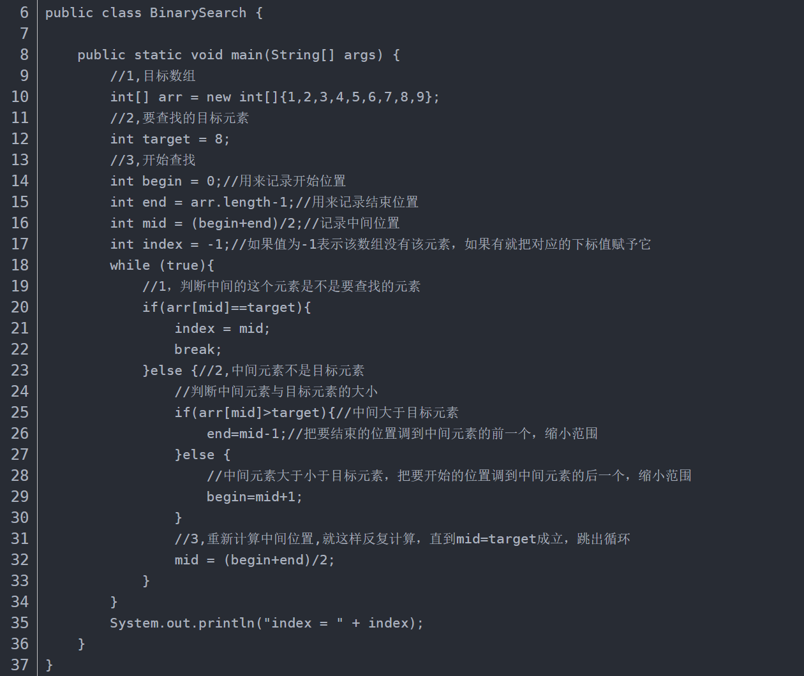

Binary Search
Theory:
- Binary search algorithm is a search algorithm that looks for a particular element in an ordered array.
The search process starts with the middle element of the array.If the middle element
happens to be the element you are looking for, the search process ends.If a particular
element is greater than or less than the middle element, it looks in the half of the array
that is greater than or less than the middle element, and starts from the middle element as
it started.
Code (Java):

Tips：
- This search algorithm reduces the search area by half each time it is compared.
- Binary search requires the data to be ordered. If the data is not ordered, it needs to be sorted first.
- Binary search cannot depend on other structures such as linked list, mainly because binary search algorithm requires random access to elements according to subscript, and the time complexity of random access to linked list is O(n). Using linked list storage, the time complexity of binary search will become very high.
Complexity:
- The length of the lookup data is N, and each lookup is halved to N/2.
Therefore, the KTH power is: N/2^k
The Worst Situation: At the KTH time, there's only one data, length 1. So: N/2^k = 1, and k=log(N).
Application scenarios:
- Binary search can filter out half of the data at each judgment, which is much more efficient
than linear search with full traversal, but it can only return one value. If there are
multiple values in the array, its limitations immediately become apparent. Also,
if there are some non-comparable elements in the array (such as strings), the array cannot
be sorted according to the natural order of its elements, so the result is indeterminate.
- Therefore, when choosing a lookup method, you need to consider many factors such as the
type of array you are looking for and what you are looking for (binary search can be used
if you are only looking for the presence of the number in the array, and binary
search is ignored if you are looking for all the positions of the number in the array).
{% if posts %}
Comment Area:
{% for post in posts %}
{{ post.author_id }}
{{ post.create_date }}
{{ post.comment }}
{% endfor %}
{% else %}
No post here. You can publish one first.
{% endif %}